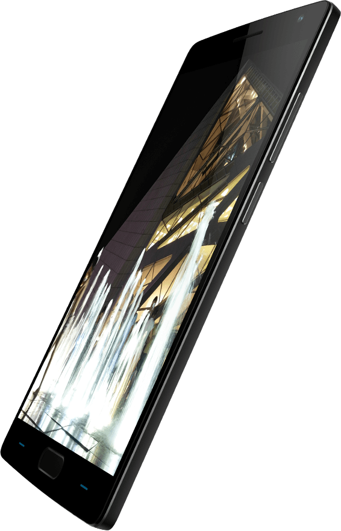

One plus 3 One plus 2 Store Support
One plus 3 One plus 2 Store Support One plus 3 One plus 2 Store Support
More than Megapixels ------
Despite being a go-to measure for smartphone cameras, megapixels fail to tell the whole story. The true test of a camera is the quality of its image sensor and optics. Our sensor contains large 1.3µm light-collecting pixels—the biggest ever in a 13MP smartphone camera—for unmatched low-light performance. A six-element lens prevents distortion, making sure that photos are clear and crisp. Day or night, make every shot beautiful.
1.3um f/2.0 Dual LED 13MP pixels Aperture Flash Sensor
Meet the One Plus 2 Overview Design Camera Oxygen OS Specs
Laser-focused
------
The OnePlus 2’s laser autofocus system locks in
a touch-free and precise focus in under 0.2
seconds. When you prepare to take a picture,
lasers automatically scan the scene, finding the
ideal focus point. Never miss that perfect shot or
let blurriness ruin a perfect moment.

Steady
------
Our advanced Optical Image Stabilization
system automatically corrects for unwanted
shakes and bumps, producing incredibly sharp
pictures and impossibly smooth videos, every time.
Spend less time being still and more time
capturing something amazing.
More Options, Better Pictures
------
When it comes to amazing pictures, it isn’t just about hardware. Our image processing algorithms were
developed by some of the most talented, experienced, and dedicated camera engineers in the
world. The OnePlus 2’s camera app is simple to use but packed with power features, allowing you to
fine-tune settings and capture stunning 4K video, slow-motion video, time lapses, and more.
Design
<--Previous
Oxygen OS
Next -->
Support: 1800 102 8411 (Toll Free)
© 2013 - 2016 OnePlus | Privacy and Legal